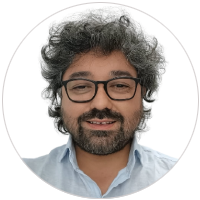

EQUIPO

René Ruby
Figueroa
Director de investigación y
transferencia tecnológica UTEM
dir.investigacion@utem.cl

Analia Radl
Facultad de Ciencias Naturales, Matemáticas y del Medio Ambiente
aradl@utem.cl

Constanza Carcamo
Facultad de Administración y Economía / Facultad de Humanidades y Tecnologías de las Ciencias Sociales / Facultad de Ciencias Jurídicas y Sociales
ccarcamo@utem.cl

Edison Matamala
Facultad de Ciencias de la Construcción y Ordenamiento Territorial
ematamala@utem.cl

Lily Sepúlveda
Facultad de Ingeniería
isepulveda@utem.cl